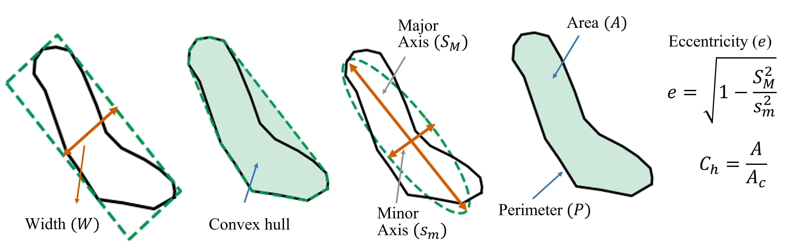

Introduction
Landsifier is a Python based library to estimate likely triggers of mapped landslides.
The Beta version of library consitute three machine learning based method for finding the trigger of Landslide inventories.
Geometric feature based method
Topological feature based method
Image based method
Sample output of each lmethod
The below plot shows the probability of each landslide polygons in testing inventory belonging to earthquake and rainfall-induced class. The majority trigger of landslides is the final trigger of the testing inventory.

1. Geometric feature based method
This method is based on using 2D landslide polygon geometric properties for classification. This method calculates various geometric properties of landslide polygon and these geometric properties are used as a feature space for machine learning based algorithm.
Sample landslide polygons
The below plot shows the sample landslide polygons of earthquake and rainfall-induced inventories.

Geometric properties of landslide polygon
The geometric properties of landslide polygons used are:-
Area (A) of landslide Polygon
Perimetre (P) of Landslide Polygon
Ratio of Area (A) to Perimetre(P)
Convex hull based measures (Ratio of area of polygon to area of convex hull fitted to polygon)
Width of minimum area bounding box fitted to polygon
Eccentricity of ellipse fitted to polygon having area A and perimetre P
minor-axis of ellipse fitted to polygon having area A and perimetre P
The below plot shows the various geometric properties of landslide polygon
{kind=link}
2. Topological feature based method
This method convert 2D landslide polygon to 3D landslide shape by including elevation information.``Landsifier`` library compute topological features of 3D landslide shape use topological data analysis. These topological features can be used in machine learning algorithm for landslide triggers classification.
Sample 3D landslide shape
The below plot shows the sample 3D landslide shape of earthquake and rainfall-induced inventories.

Coversion of 2D landslide polygons to 3D landslide shape
The below plot shows the method for coversion of 2d landslide polygon to 3D shape.

3. Image based method
This method convert landslide polygon data to landslide polygon Images. These converted landslide images are used as a input to Convolutional Neural Networks for landslide classification.
Sample Polygon Images
The below plot shows the sample landslide polygon Images.

Coversion of 2D landslide polygons to Images
The below plot shows the method for coversion of 2d landslide polygon to grayscale binary images.